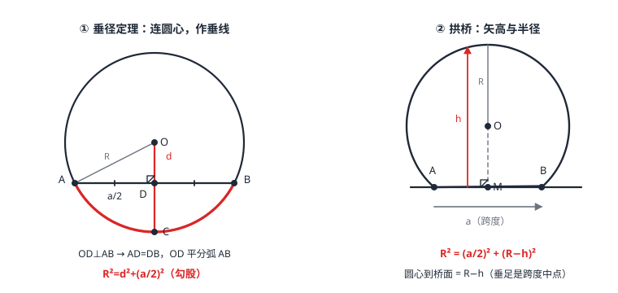

圆的概念与垂径定理
圆是到定点的距离等于定长的点的集合——半径 r 一把尺子定乾坤。弦、直径、弧（劣弧、优弧、半圆）是圆里的基本零件；垂径定理说：垂直于弦的直径平分这条弦，并且平分弦所对的两条弧。配上弦心距 d，就得到计算主力 R^2=d^2+(a/2)^2——知二求二，拱桥、管道水深全是它的应用。
| 所属主题 | 圆 |
|---|---|
| 所属模块 | 几何 |
| 课标学段 | 第四学段（7~9 年级） |
| 前置知识 | 直角三角形与勾股定理、等腰三角形与等边三角形、尺规作图 |
| 核心素养 | 几何直观推理能力运算能力 |
教材定位
人民教育出版社《人教版（2024版）义务教育教科书·数学》
九年级上册第29章 圆29.1 圆的有关概念29.2 圆的有关性质
对应九上 29.1 与 29.2：圆、弦、直径、弧等概念在 29.1，垂径定理（垂直于弦的直径）与圆心角在 29.2。
说明
圆的两种说法是一回事：静止地看，圆是平面上到定点（圆心 O）的距离等于定长（半径 R）的点的集合；转动地看，它是一条线段绕一个端点旋转一周，另一个端点画出的曲线。小学认识的圆心、半径、直径在这里升级为「等距集合」——判断点在不在圆上，只需比较 OP 与 R。
弦：连接圆上任意两点的线段；直径是经过圆心的弦，也是最长的弦。弧：圆上任意两点之间的部分，小于半圆的叫劣弧（不加说明时「弧」指劣弧），大于半圆的叫优弧，半圆恰好是分界。弦心距：圆心到弦的距离（垂线段的长）。
垂径定理：垂直于弦的直径平分这条弦，并且平分弦所对的两条弧。反过来（弦不是直径时）：平分弦的直径垂直于弦，且平分弦所对的弧。它的计算化身是四量关系：设半径 R、弦心距 d、弦长 a，则 R^2=d^2+(a/2)^2——半弦、弦心距、半径构成直角三角形（图 1 左）。
使用场景
拱桥与隧道：石拱桥的拱是圆弧，量出跨度 a 和拱高 h 就能反算半径 R（图 1 右）——古代工匠靠「矢跨比」经验，今天我们靠勾股。隧道的圆弧断面、窑炉的弧形顶棚同理。
管道与水位：圆形排水管里水深多少、水面多宽，是「弦」的现场：水面是弦，水最深点在弧上，配一个弦心距就能算（例 3）。
注意点
「平分弦的直径垂直于弦」的前置条件是这条弦不是直径——直径被任何直径平分（都过圆心），但未必垂直。条件写全才严谨。
垂径定理说的是「垂直于弦的直径」：这条线必须过圆心。只是「垂直于弦」的普通线段什么也平分不了。
弧的分类别混：半圆既不是劣弧也不是优弧（它等于 180°，是分界线）；「弧 AB」不加说明默认指劣弧，指优弧要写成「优弧 AB」。
弦心距的垂足在弦上（弦与圆心之间），别把它画到弦的延长线上——那是点到直线距离（相交线与平行线）的另一回事。
证明

图 1：左——垂径定理与弦心距四量关系（OD⊥AB，AD=DB，OD 平分弧）；右——拱桥问题：跨度 a、拱高 h 与半径 R 满足 R²=(a/2)²+(R−h)²
证明
结论 1垂径定理：垂直于弦的直径平分这条弦，并且平分弦所对的两条弧。
圆关于任意一条直径所在直线对称——对称轴过圆心，圆心不动，圆翻折后与自身重合。设直径 CD 所在直线垂直于弦 AB，则 A 关于这条直线的对称点 A' 既在圆上（对称性），又在过 A 且垂直于对称轴的直线上——而这条直线正是 AB 所在直线（AB\perp CD）。所以 A' 是直线 AB 与圆的另一个交点，即 B。对称点连线被对称轴垂直平分：CD 平分 AB，也把弧 AB 翻成两段相等的弧。
关键一步依据是轴对称的定义与性质：圆关于过圆心的任意一条直线对称，这条对称轴同时是圆上点的对称轴。A' 是 A 关于该直线的对称点，由对称性 A' 仍在圆上；又对称轴垂直平分对应点连线，所以 A' 与 A 的连线垂直于 CD，即落在 AB 所在直线上。既然 A' 既在圆上又在直线 AB 上且与 A 不同，它就只能是直线 AB 与圆的另一个交点 B。而 CD 垂直平分 AA'（A' 就是 B，所以 AA' 就是弦 AB），弧 AB 被这条对称轴整条翻折过去，两段弧因此相等。
结论 2等腰三角形三线合一的说法与轴对称说法等价：OD 同时是 \triangle OAB 底边上的高、中线与顶角平分线，所以 AD=BD，弦所对的两段弧也相等。
连 OA、OB，OA=OB=R，\triangle OAB 是等腰三角形；OD 是底边上的高，由三线合一（等腰三角形与等边三角形），D 同时是中点——AD=BD，顶角也被平分，弧随之对半分。两种说法一静一动，说的是同一件事。
关键一步依据是等腰三角形的三线合一（见等腰三角形与等边三角形）：在等腰三角形中，底边上的高与底边上的中线、顶角平分线是同一条线。OA=OB=R 保证 \triangle OAB 是等腰三角形，而 OD\perp AB 由已知条件给出，所以 OD 就是这条三线合一中的高，D 顺带成为 AB 的中点；顶角被平分后，两条半径把整圆分成两段相等的弧。
结论 3半径、弦心距与弦长之间满足勾股关系 R^2=d^2+(a/2)^2；拱桥公式 R^2=(R-h)^2+(a/2)^2 是它的变形。
垂径定理保证 D 是中点，于是 OD\perp AB、AD=a/2，在直角 \triangle OAD 中用勾股定理（直角三角形与勾股定理）：R^2=d^2+(a/2)^2。拱桥公式是它的变形：设拱高 h、跨度 a，圆心在拱内侧距桥面 R-h 处（图 1 右），勾股即 R^2=(R-h)^2+(a/2)^2。
关键一步依据是勾股定理（直角三角形与勾股定理）用在直角 \triangle OAD 上：OD\perp AB 给出直角，AD=a/2 给出半弦长，斜边是半径 OA=R，于是 R^2=OD^2+AD^2=d^2+(a/2)^2。拱桥情形只是把 OD 换成圆心到桥面的距离 R-h，同一个式子换个外形。
动手实验
剪一个圆纸片，沿任意一条直径对折，两半完全重合；在圆内画一条不过圆心的弦，再折一条垂直于这条弦的折痕——折痕必过圆心，且弦被折痕平分。用刻度尺量半径 R、弦心距 d、半弦 a/2，代入 R^2=d^2+(a/2)^2 验证（误差应在毫米级）。
解题思路
见弦作弦心距：圆里凡有弦长计算，先从圆心向弦作垂线（垂径定理的标准辅助线），得到「半弦—弦心距—半径」直角三角形，勾股知二求二。
拱桥类问题设半径列方程：R^2=(R-h)^2+(a/2)^2，展开消去 R^2，解一元一次方程得 R=h^2+(a/2)^2/2h——负号移项别丢，除的是 2h 不是 h。
圆上找点、判断位置用定义：点 P 在圆上 \Leftrightarrow OP=R；在圆内 OP<R；在圆外 OP>R。「等距集合」是后面点、直线与圆位置关系（点、直线与圆的位置关系）的入口。
按场景的例题
例 1（场景：测量与工程） 石拱桥跨径估算
一座圆弧石拱桥，桥面跨度（弦长）37.4 米，拱高（弓形高）7.2 米。求拱所在圆的半径 R。
解：设圆心为 O，半径 R。由垂径定理，圆心到桥面的垂足是跨度中点：R^2=(R-7.2)^2+18.7^2。展开：R^2=R^2-14.4R+51.84+349.69，消去 R^2 得 14.4R=401.53，R\approx 27.9（米）。
答：R=18.7^2+7.2^2/2× 7.2=401.53/14.4\approx 27.9 米。
例 2（场景：图形设计） 圆形工件画线
要在半径 10 厘米的圆形工件上画一条弦，要求圆心到弦的距离为 6 厘米。这条弦长是多少？
解：半弦、弦心距、半径构成直角三角形：(a/2)^2=R^2-d^2=100-36=64，a/2=8。弦长 a=16 厘米。
答：a=2\sqrt10^2-6^2=16 厘米。
例 3（场景：生活优化） 雨水管道蓄水
半径 10 厘米的圆形水平管道，一场雨后量得水面宽 16 厘米。水深是多少？分两种情况讨论。
解：水面是弦：半弦 8，弦心距 d=\sqrt10^2-8^2=6。水面低于圆心时，水深 =R-d=10-6=4；水面高于圆心时，水深 =R+d=16。
答：水深 4 厘米（水浅、圆心在水面上方）或 16 厘米（水深、圆心被淹没）。
常用推论
同圆中弦心距与弦长互相牵制：d 越大弦越短，d=R 时弦缩成一点，d=0 时弦就是直径——「最长弦是直径」是四量关系的极端情形。
垂直平分弦的直线过圆心：垂径定理逆过来就是找圆心的办法——两段弧的公共弦（或任意弦）的垂直平分线必过圆心，这正是尺规作图（尺规作图）里「垂直平分线」的圆上回响。
弦相等 \Leftrightarrow 弦心距相等：由 R^2=d^2+(a/2)^2，R 定了则 a 由 d 唯一确定——比较弦的大小，量弦心距就行，不用量弦。
易错点
错平分弦的直径一定垂直于弦。
为什么错忘了前置条件：若这条弦本身是直径，任何过圆心的直线都平分它，但未必垂直。
正确平分弦（弦不是直径）的直径垂直于弦，并且平分弦所对的两条弧。
错拱桥问题里列方程 R^2=(R+h)^2+(a/2)^2。
为什么错拱高 h 是从桥面量到拱顶，圆心在桥面上方、拱顶下方，所以圆心到桥面的距离是 R-h 不是 R+h。
正确R^2=(R-h)^2+(a/2)^2，展开后解一元一次方程。
错半径 10、水面宽 16 的管道水深只有 4 厘米一种答案。
为什么错弦心距只给出圆心到水面的距离 6，水面可以在圆心下方（水深 R-d）也可以在圆心上方（水深 R+d）。
正确两解：10-6=4 或 10+6=16 厘米，由水位高低决定。
直观理解
圆是对称性之王：三角形只有屈指可数的对称轴，圆有无数条——每条直径都是对称轴。垂径定理不过是这条对称性的「落地动作」：对着直径折一下，弦对折、弧对折，中点自动出现。所以圆里的弦问题总有一条隐形折痕：从圆心垂直落到弦上的那条线——找到它，勾股定理立刻接管。拱桥之所以千年不塌，秘密也在这条折痕上。